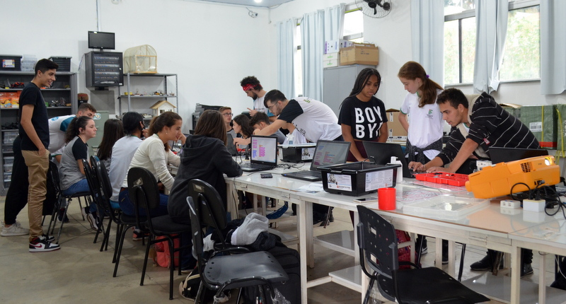
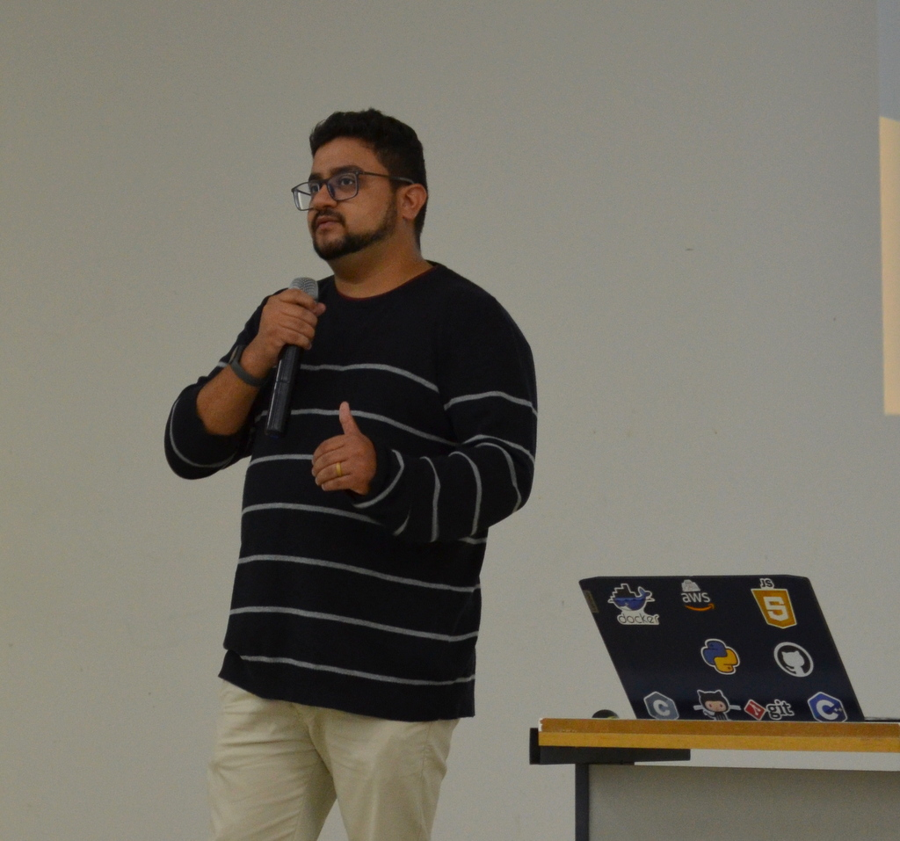
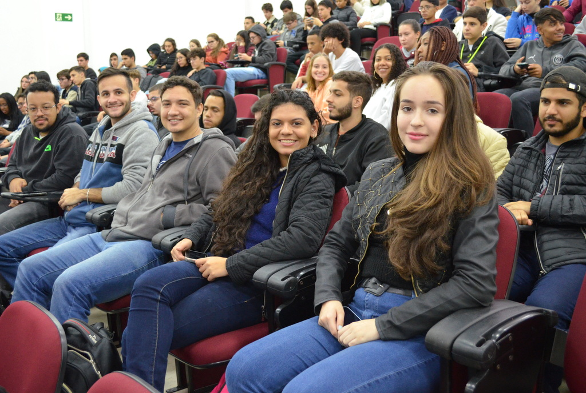

Evento Anual
Computer Day
Integração, tecnologia e inovação reunidos em um único dia. Promovendo o conhecimento para a comunidade acadêmica.
O Computer Day do IFSULDEMINAS - Campus Machado é um evento anual que promove a integração entre os estudantes do curso de Sistemas de Informação e do Curso Técnico em Informática Integrado.
Durante o evento você poderá:
Palestras
Acompanhe temas atuais e tendências da área de tecnologia.
Minicursos
Aulas práticas e enriquecedoras para alavancar suas skills.
Integração
Momentos de networking, troca de ideias e sorteios de brindes.
Projetos
Conheça projetos como Autobots, Pixels e Meninas Digitais.
Galeria de Edições Anteriores

Curso de Arduino

Palestra: Mercado de Trabalho

Atividades Práticas de Manutenção